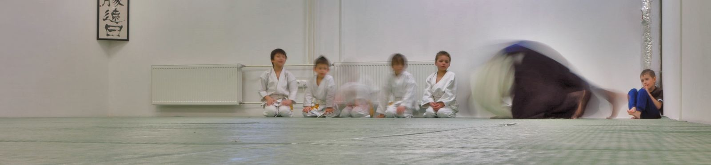

Náš oddíl je veden tak, aby v něm mohly společně cvičit děti školního věku i mládež — chlapci i dívky, začátečníci i zkušenější žáci. Klademe důraz na to, aby se ve skupině dobře domluvily děti různého věku i úrovně.
Nedílnou součástí tréninku jsou dechová cvičení. Pravidelné cvičení přispívá ke zklidnění a lepší soustředěnosti a pozornosti dětí.
Nábor probíhá průběžně po celý rok — přidat se tedy může vaše dítě kdykoliv.
